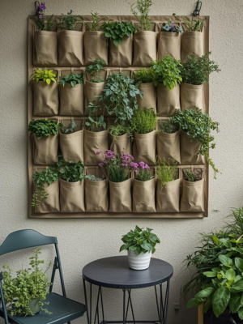
10 Balcony Wall Garden Mistakes That Kill Plants (And How to Avoid Them)
16 March 2026
Wall gardens are one of the easiest ways to grow more plants on a small balcony. By using vertical space instead of the floor, you can add herbs, flowers, and greenery without making the balcony feel crowded.
They’re also a simple way to turn a plain wall into something more lively. Even a few planters can make a small outdoor space feel much more like a garden.
But like any small-space setup, a wall garden sometimes needs a bit of experimenting. When plants are arranged vertically, small issues can appear that aren’t always obvious at first.
The good news is that plants usually show early signs when something isn’t working quite right.
Signs Your Vertical Garden Setup Isn’t Working
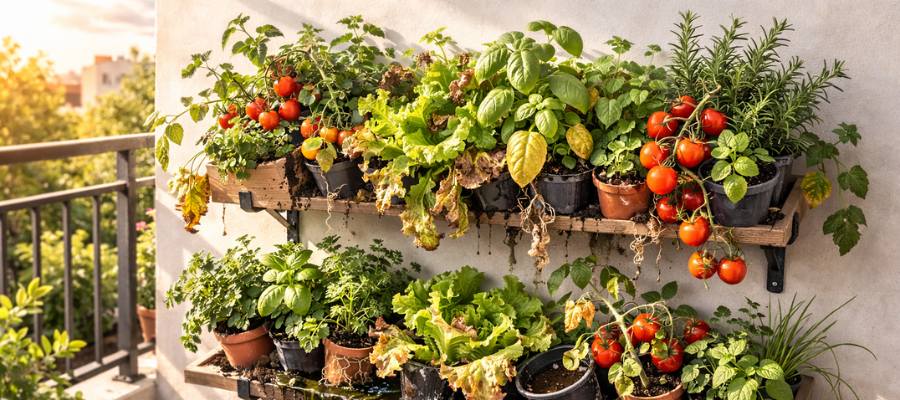
If a balcony wall garden isn’t thriving, plants usually give small signs that something needs to change. Paying attention to these early signals can help you fix problems before plants start struggling too much.
One common sign is soil drying out very quickly, sometimes within a single warm day. This often happens when containers are too small or the wall receives stronger sun than expected.
On the other hand, yellowing leaves or constantly damp soil may suggest that water isn’t draining properly. In vertical setups, poor drainage can cause roots to stay wet for too long.
Slow growth, pale leaves, or stretched-looking plants are often a sign that the garden isn’t getting enough light.
Sometimes the issue is overcrowding. When too many plants are packed into a small wall garden, they compete for light, airflow, and space to grow.
If you notice any of these signs, it’s usually a good moment to adjust the setup. Small changes — like improving drainage, spacing planters out, or choosing plants that better match the light conditions — can make a big difference.
Most of these issues come from a few common setup mistakes. Once you know what to look for, they’re usually easy to fix.
Below are the most common balcony wall garden mistakes — and how to avoid them.
The 10 Most Common Balcony Wall Garden Mistakes
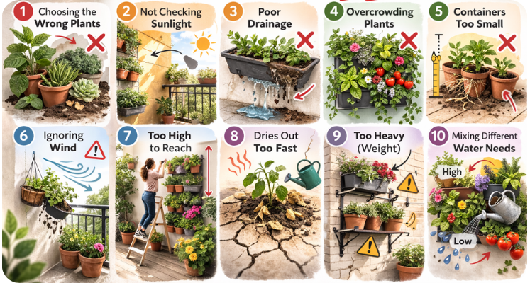
Before we look at each one in detail, here’s a quick overview of the most common problems people run into when setting up a vertical garden on a balcony.
- Choosing the Wrong Plants for Vertical Gardens
- Not checking sunlight before installing the garden
- Poor drainage in wall planters
- Overcrowding the wall garden
- Using containers that are too small
- Underestimating wind on balconies
- Installing the garden too high
- Forgetting that vertical gardens dry out faster
- Ignoring the weight of a wall garden
- Mixing plants with very different water needs
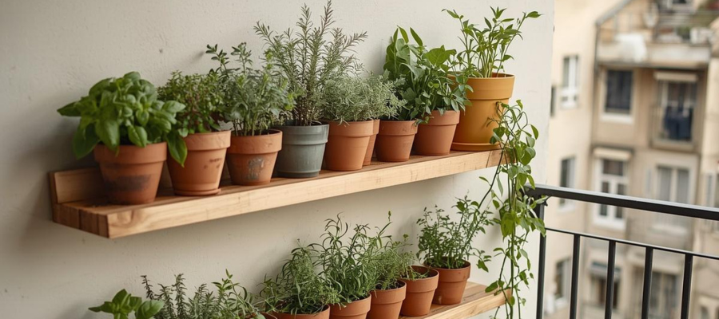
1. Choosing the Wrong Plants for Vertical Gardens
It’s tempting to plant anything you like in a wall garden, but not every plant adapts well to vertical spaces.
Large plants with heavy roots or wide growth can quickly outgrow small wall planters and make the structure harder to maintain. Plants like tomatoes, zucchini, large peppers, or big leafy greens may start well but often become too heavy or crowded once they begin growing. Deep-rooted plants also struggle in the shallow containers that many vertical systems use.
Wall gardens usually work best with plants that stay compact and don’t require a lot of soil. Small herbs, trailing plants, and lightweight flowers tend to adapt much better to vertical setups.
For example, herbs like thyme, oregano, basil, and chives grow comfortably in smaller planters. Strawberries also work well because they naturally trail over the edges. For a greener look, pothos, small ferns, ivy, or trailing philodendrons can fill a wall nicely without becoming too heavy.
If you’re unsure about a plant, it’s often helpful to think about how big it will be in a few months, not just how it looks when you first plant it. Choosing smaller, lighter plants usually makes a wall garden easier to manage and keeps the structure looking balanced as everything grows.
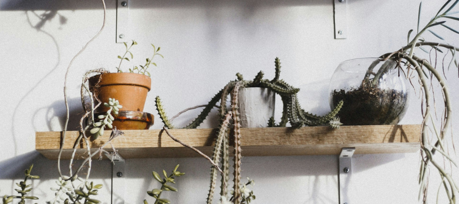
2. Not Checking Sunlight Before Installing the Garden
Balcony walls can have very different light conditions depending on their direction and nearby buildings. Even on the same balcony, one wall might receive strong sun for several hours while another stays shaded most of the day.
Before installing a wall garden, it helps to observe how the light changes during the day. Spend a day or two noticing when the wall gets sun and how long it lasts. Morning sun, afternoon sun, and full shade can all create slightly different growing conditions.
If the wall receives several hours of direct sunlight, herbs like thyme, rosemary, basil, oregano, chives, and strawberries usually do well. You can also grow compact flowering plants like petunias, calibrachoa, or small marigolds in sunny spots.
For shadier balconies, plants like pothos, ivy, ferns, hostas, leafy greens like lettuce or arugula, and shade-tolerant herbs such as mint or parsley tend to adapt much better.
Matching plants to the natural light on your balcony often makes the biggest difference in how well a wall garden grows.
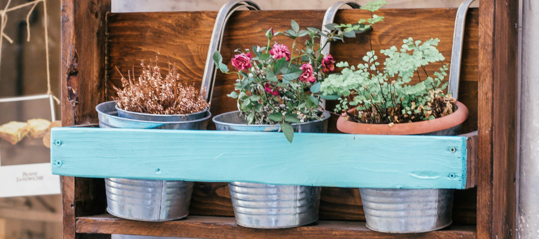
3. Poor Drainage in Wall Planters
Drainage is one of the biggest problems in vertical gardens, especially when planters are mounted directly against a wall.
If water cannot drain properly, it collects at the bottom of the container and the roots remain constantly wet. Over time this can lead to root rot, where plants start to turn yellow, wilt, and slowly decline even though they are being watered regularly.
At the same time, vertical planters are often quite small, which means the soil above the wet layer can still dry out quickly. This uneven moisture can make plants struggle even more.
Using planters with proper drainage holes is essential for keeping roots healthy. It also helps to leave a small gap between the planter and the wall so excess water can escape instead of getting trapped.
Adding a thin layer of gravel or coarse soil mix at the bottom of the container can also improve drainage and help prevent water from sitting around the roots. Small adjustments like these can make vertical planters much more reliable over the growing season.
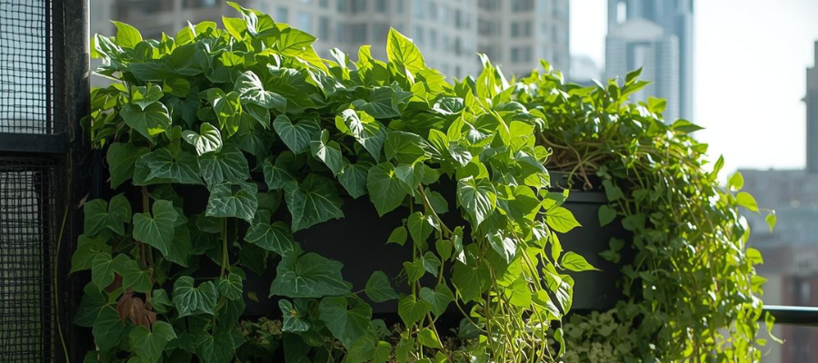
4. Overcrowding the Wall Garden
A full plant wall can look beautiful in photos, but in real life plants still need space to grow and breathe.
When planters are packed too closely together, airflow becomes limited and watering becomes more difficult. Leaves may stay damp longer, which can lead to mildew or other plant issues. Plants may also start competing for sunlight if larger ones begin shading the smaller ones below.
This often happens when fast-growing plants are placed too close together. For example, mint, strawberries, ivy, or pothos can quickly spread and take over nearby space. Even herbs like basil or parsley can become quite bushy after a few weeks of growth.
Leaving a little space between planters helps light reach all the plants and makes watering much easier. A wall garden doesn’t need to be completely full to look lush — sometimes a bit of spacing actually makes the plants stand out more.
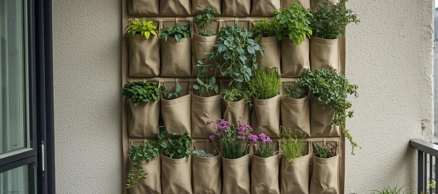
5. Using Containers That Are Too Small
Many vertical garden containers are quite shallow. While they save space, they also hold less soil, which means plants dry out faster and roots have less room to grow.
Some plants adapt well to smaller containers, but others need a bit more depth. For example, basil, parsley, lettuce, or strawberries usually grow better in slightly deeper planters where their roots have more space.
Very shallow containers are best reserved for compact plants like thyme, oregano, chives, succulents, or small trailing plants such as string of pearls or creeping thyme.
A little extra soil can make a big difference, especially during warm summer weather when small containers can dry out surprisingly fast.
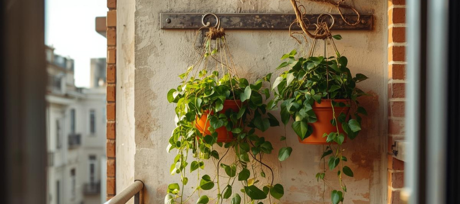
6. Underestimating Wind on Balconies
Balconies, especially on higher floors, can be much windier than ground-level gardens.
Wind dries out soil quickly and can damage delicate plants. Light leaves may tear, and trailing plants can become tangled or stressed from constant movement.
Some plants handle windy conditions better than others. Herbs like rosemary, thyme, oregano, and sage tend to be more resilient, while softer plants such as lettuce, basil, or small ferns may struggle in exposed spots.
Wind can also affect lightweight planters. If containers are not secured properly, they may shift or fall during strong gusts. Using sturdy brackets, heavier planters, or placing the wall garden in a slightly sheltered spot can make the setup much more stable.
If you’d like to learn more which plants handle windy balconies best and how to help them thrive, check out this article: Plants That Can Handle a Windy Balcony.
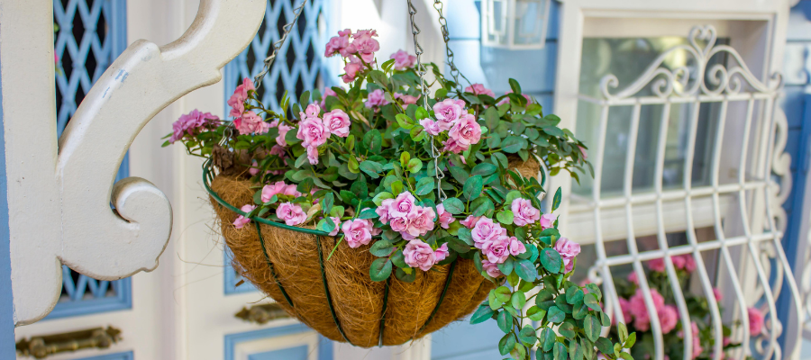
7. Installing the Garden Too High
When setting up a wall garden, it’s easy to focus on how it looks and forget about everyday maintenance.
If the top planters are difficult to reach, watering, pruning, and harvesting quickly becomes inconvenient. Over time those plants may simply get less attention because they’re harder to access.
This can become noticeable with plants you harvest regularly, such as basil, thyme, chives, or strawberries. If they’re placed too high, it becomes easy to forget about trimming or checking the soil.
Keeping the highest row within comfortable reach makes the garden much easier to maintain. It also allows you to notice small issues — like dry soil or pests — before they become bigger problems.
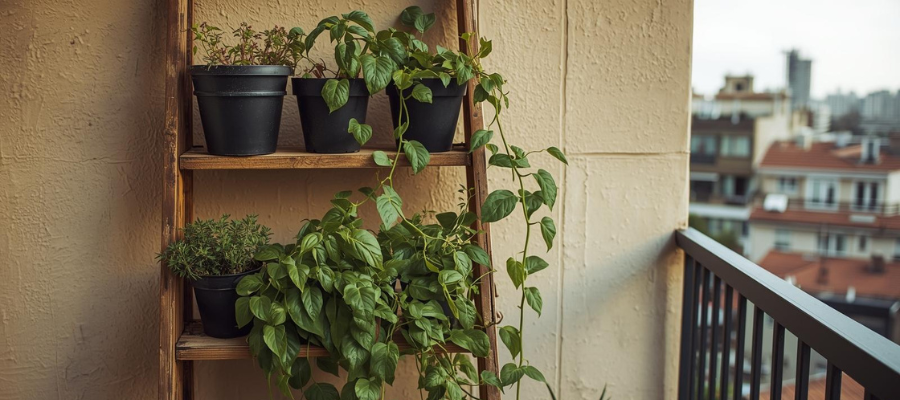
8. Forgetting That Vertical Gardens Dry Out Faster
Because wall planters are exposed to air and sun on multiple sides, they often dry out faster than regular containers placed on the floor.
This is especially noticeable on sunny or windy balconies, where smaller containers may lose moisture very quickly.
Plants with thin leaves, like lettuce, spinach, basil, or parsley, often show signs of dryness first. Leaves may droop or become soft during warm afternoons if the soil dries out too quickly.
Using a moisture-retaining soil mix, adding a small amount of compost, or choosing slightly larger planters can help keep moisture in the soil longer. Checking the soil regularly during hot weather also helps prevent plants from drying out too quickly.
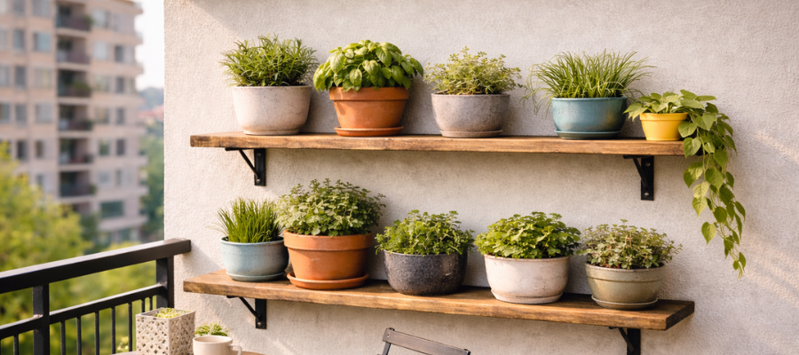
9. Ignoring the Weight of a Wall Garden
A wall garden may look light at first, but once the containers are filled with soil and regularly watered, the total weight increases significantly.
Large ceramic pots, thick soil, and water can add up quickly, especially if several planters are mounted on the same section of wall.
Heavier plants can also add extra weight over time. For example, large tomato plants, big peppers, or dense herbs like mature basil bushes can make planters heavier than expected.
Using strong brackets and spreading the weight across the wall helps keep the installation secure. Lightweight materials like plastic or fiber planters can also reduce the overall load.
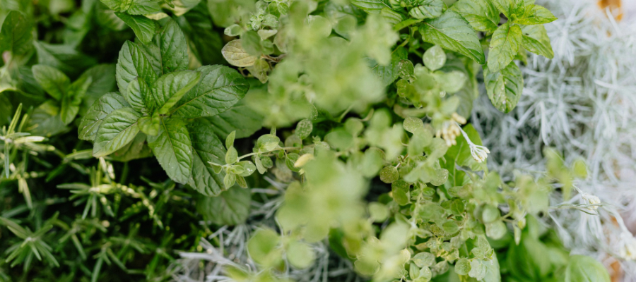
10. Mixing Plants With Different Water Needs
Another common mistake is grouping plants together that require very different watering routines.
Some herbs prefer slightly drier soil, while others enjoy more consistent moisture. When they share the same planter or watering schedule, one plant usually ends up struggling.
For example, rosemary, thyme, oregano, and sage prefer soil that dries out a bit between watering. Plants like mint, parsley, basil, lettuce, or ferns tend to like more regular moisture.
Grouping plants with similar needs together makes watering much easier and helps prevent problems like root rot or dry soil. It also keeps the overall garden more balanced and easier to care for throughout the season.
Final Thoughts
A balcony wall garden doesn’t need to be complicated to work well. With the right plants, proper drainage, and a bit of space between planters, even a small wall can become a thriving little garden.
Starting simple is often the best approach. A few well-chosen herbs or trailing plants in sturdy planters can already transform a plain balcony wall into something green and lively. As you observe how the space behaves — how quickly the soil dries, how the sunlight moves during the day, and how plants respond — it becomes much easier to adjust the setup over time.
With a little experimentation and regular care, a vertical garden can become one of the most rewarding parts of a small balcony. Even a modest wall garden can provide fresh herbs, soft greenery, and a bit of everyday nature just outside the door.